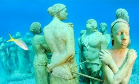
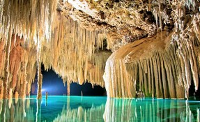
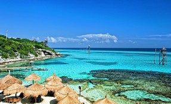

Underwater Art Museum, MUSA

Description
As its name implies, this museum lies in the depths of the Caribbean Sea offering you a unique experience when you visit it. Its aim is to show how art and nature can interact. The sculptures that have been submerged are made of materials that promote coral life. It consists of two galleries: Salón Manchones and Salón Nizuc, the first to eight meters and the second to four. Dive in and you will be amazed.
Tulum
Description
Not only is considered by many one of the best and most beautiful beaches in Mexico, this site combines history, culture and the spectacular nature. Whether you go to visit its Archaeological Zone or spend a day on its pleasant beach with warm water, it is a destination that will reward you with its beauty. It also has ecological accommodation, becoming one of the best enclosures if you are looking for peace and quiet.
Isla Mujeres
Description
For many it is the best destination in the area and even several prefer to stay in it. But even if you are only going to spend the day, the island will surprise you with its terrestrial and aquatic beauty. With several reefs, it is an ideal place to practice diving. Its beaches invite you to take a dip thanks to its warm water. To the south you can walk in the mangroves. There you will have all the tourist services necessary to not worry about anything.
Rio Secreto

Description
Considered one of the best 'green' expeditions in Latin America, strolling along this spectacular river will leave you in awe. Its walls are formed of stalactites and stalagmites that for millions of years have witnessed the passage of time. During your visit you can travel through Xibalba, the Mayan underworld, walk through its caves and swim in the river. An experience that will amaze you with its incomparable beauty.
National Park Isla Contoy
Description
On this island the waters of the Caribbean Sea join with those of the Gulf of Mexico and is one of the most important shelters of seabirds in the Mexican Caribbean. On the Ixchalé reef, which marks the beginning of the second longest barrier reef in the world, fish and corals abound. In addition to the many birds that arrive, during the summer you can observe sea turtles. Only 200 visitors are allowed per day, so schedule your visit well.
Parque Garrafón

Description
This natural park offers you fun in the earthly paradise on which it lies. You can enjoy kayaking, snorkeling, cliff walks, swimming with dolphins, zip lining or bike tours. If you prefer a more relaxing experience, you have a panoramic swimming pool, as well as hammocks and lounge chairs. Look for the package that best suits your taste to make the most of your visit.